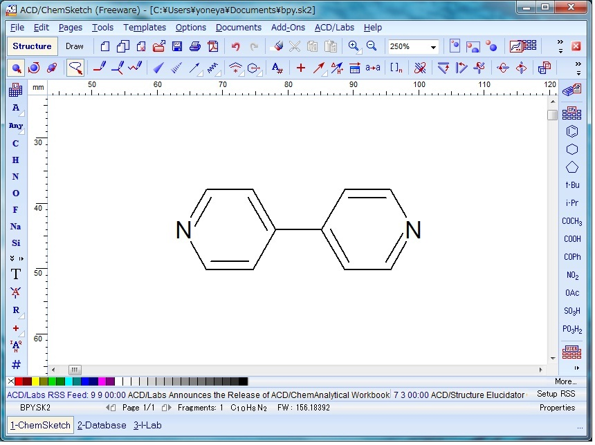
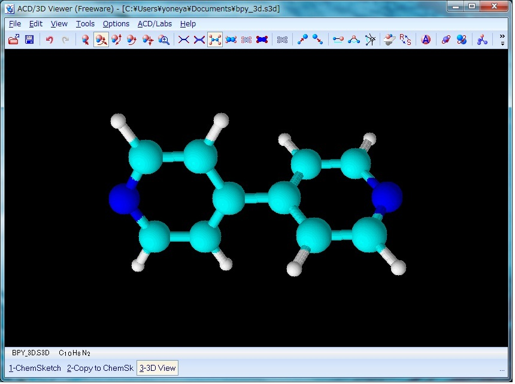

1. 分子モデリング
1.1 一分子構造ファイルの準備
最初のステップとして、対象とする分子（ここでは MOFの有機配位子 4,4'-bpyを例に説明）の分子構造ファイルを、水素原子を含んだ形で三次元座標として、MDL-mol ファイルで ChemSketch Freeware 等を用いて作成する（ChemOffice の場合は後述）。
ChemSketch Freewareを用いた化学構造の描画は直感的に可能である。原子のインデックス番号は、基本的に作画した順に振られていくので、図１のように端から番号をつけたければ作画の順番を意識するとよい。

Fig. 1 Drawing 4,4'-bpy with ChemSketch
原子の番号の表示は、 Edit メニューから Select All で分子全体を選択し、次に Tools メニューから Structure Property を選択して表示される小ウインドウの Atom メニューの N(Numbering) をクリックし、右に表示される Show チェックボックスを ON にして Apply すると可能である。
図１のような水素原子を省略した構造を作成した後、 ACD/Labs メニューから 3D Viewer を起動し、左下に表示されるリストから ChemSketch を選択して一度 ChemSketch に戻り作成した分子構造を表示させる。 次に左下のリストに表示される copy to3D Viewer を選択すると、 ChemSketch で作成した分子構造が 3D Viewer に表示される。 次に、 Tools メニューから 3Doptimization を実行する。 これにより、図２の様に、省略されていた水素原子が付加され、同時に分子構造を三次元化することができる。
上記 3Doptimization を実施しないと次のステップでエラーが発生するので注意。
Fig. 2 4,4'-bpy after 3D optimization
ここで、次に左下のリストの copy to ChemSketch を選択し、3D Viewer でoptimizeした分子構造を ChemSketch に上書きする。
次に、ChemSketchのFile メニューから export で、ファイルの種類として MDL molfiles [V2000] を選択し、適当なファイル名 (bpy.mol等) をつけて、自分の Windows ユーザー名が漢字でなく英数字の場合は下記のフォルダに保存する。C:\Users¥ユーザー名（あるいは C:\ユーザー¥ユーザー名）
自分のユーザー名が漢字の場合は、後での作業のため上記の代わりに、C:\Users¥Public（あるいは C:\ユーザー¥パブリック）
に保存する。
ChemOffice の場合は、ChemSchetchの代わりにChemDrawで分子構造を２次元的に作成した後、ChemDrawの上段メニューからView - Show Chem3D HotLink Windowを実行することにより、省略されていた水素原子が付加され、三次元化された分子構造がサブウインドウに表示される。
次にこのサブウインドウ左下隅のアイコン（Launch Chem3D）をクリックして、Chem3Dを立ち上げ、その上段メニューからFile - Save Copy Asで表示されるサブウインドウで、上記のChemSketch+3D Viewerと同様にファイルの種類として MDL molfiles (V3000でない方) を選択し、適当なファイル名 (bpy.mol等) をつけて上記のフォルダに保存する。1.2 多分子初期構造の準備
前節で作成した一分子モデルを用いて多分子シミュレーションを行うためには、その初期条件として多分子からなる初期構造が必要となる。 現実的な計算時間で熱平衡状態に近づけるためには、適切な初期構造の選択が重要となる。 計算に用いる初期構造を得る方法としては次が考えられる。
最初のランダム配置した初期構造は、 packmol プログラムによって作成可能である。
- 乱数等を用いランダムに分子を配置して用いる
- X 線回折による結晶構造データーを用いる
- 人為的な結晶構造を作成して用いる
packmol は、Windows Subsystem for Linux (WSL)のコマンドプロンプト画面で実行する。
WSLコマンドプロンプトは、左下隅のウインドウズアイコンをクリックして表示されるプログラムメニューから、"ubuntu *** (あるいは Bash on Ubuntu on Windows）" を選択すると表示される。
上記のWSLコマンドプロンプトを開いた直後は、通常は/home/WSLインストール時に指定したユーザー名
というディレクトリ（フォルダ）になっている（コマンドプロンプ表示後半で確認できる）ので、 前節でChemSketch等で作成したMDL-mol ファイル（bpy.molとする）のあるフォルダに次のコマンドを入力して移動する。
cd /mnt/c/Users/自分のWindowsユーザー名
Public フォルダにMDL-molファイルを作成した場合は、下記で移動する。
cd /mnt/c/Users/Public
移動できたかは、コマンドプロンプ表示後半で確認でき、コマンド"ls -l"を入力すると、前節でChemSketch等で作成したMDL-mol ファイル（bpy.molとする）が表示されるはずである。
packmol は入力座標フォーマットとして上記で作成したMDL-molファイルは読み込めないので、読み込み可能なpdbファイルフォーマットに antehcmber で変換する。
具体的には、"WSLコマンドプロンプト"で次のように入力する。antechamber -fi mdl -i bpy.mol -fo pdb -o bpy.pdb
次に、packmol のインプットファイルを、例えば下記の内容でメモ帳（アプリメニューのWindowsアクセサリの中に有る）等で作成し、 例えば、bpy-128.txt という名前で上記の molファイル等のあるフォルダに保存する。
tolerance 2.0 add_box_sides 2.0 structure bpy.pdb number 128 inside box 0. 0. 0. 45. 45. 45. end structure output bpy-128.pdb上記のインプットファイルでは、structureで指定された一分子座標ファイルの分子を、numberで指定された分子数（128 分子）inside boxで指定された 45Å x 45Å x 45Å の box中に配置して、outputで指定された座標ファイル名に書き出す設定となっている。
これを用いて、"WSLコマンドプロンプト"で、次のように入力する。packmol < bpy-128.txt
上記で作成された座標ファイル（bpy-aa-128.pdb）の分子配置は、プログラムvmdにより図４のように可視化できる。
具体的には"コマンドプロンプト"で、vmd.exe bpy-128.pdb
とコマンド入力する。

Fig. 3 Viewing bpy-128.pdb file with VMD
分子の回転等の操作は、ウインドウ内でマウスボタンを押しながらマウスを動かすことにより可能である。
周期境界を表すMD セルは、vmdを実行したコマンドプロンプトで、
pbc box
と入力するか、あるいは、VMDのインストールフォルダにあるvmd.rcというファイルの最後に
user add key b {pbc box -color green}
を追加・保存し、分子表示画面がアクティブな状態でキーボードのｂを押すと表示できる。
終了は file メニューから exit を選択する。1.3 LAMMPSデータファイルの生成
次のステップは、LAMMPS によるMD 計算に必要なデーターファイルの作成である。
このデーターファイルを作成する方法の一つとして、以下では moltemplate を使う方法を説明する。
moltemplate によるデーターファイルの作成には、まずテンプレートファイルを用意する必要がある。
以下、ChemSketchで作成したMDL-molファイルからこのテンプレートファイルを作成する手順を説明する。まず、ChemSketchで作成したMDL-molファイルをプログラム antechamber を使ってsybyl-mol2ファイルに変換する。
具体的には、"WSLコマンドプロンプト"で次のように入力する。antechamber -fi mdl -i bpy.mol -fo mol2 -o bpy.mol2 -at gaff -c gas -rn bpy
上記実行時に、general AMBER力場(GAFF)中の原子タイプと、"-c gas" で指定した Gastiger 法による原子点電荷が割り振られ、これらの情報は moltemplate で用いられる。
general AMBER力場では点電荷として、 Gaussian 等を用いた非経験的分子軌道計算による RESP(Restrained Electro Static Potential) 電荷が標準となっている。
Gaussianが利用できる環境にあれば、それを用いて上記の RESP 電荷を算出して用いる方が望ましい。
付録A にその方法を説明しておく。次に、moltemplate に必要となる分子毎のテンプレートファイルを、mol22lt.pl で作成するため、同様に"WSLコマンドプロンプト"で次のように入力する、
mol22lt.pl < bpy.mol2 > bpy.lt
次に、計算する系のテンプレートファイルを、例えば下記の内容でメモ帳等で作成し、例えば system.txt という名前で保存する。
import "gaff.lt" import "bpy.lt" BPY = new bpy [128]上記のシステムテンプレートファイルでは、計算に使用する力場パラメータファイル(gaff.lt)と、計算する系に存在する分子の分子テンプレートファイル(bpy.lt)をインポートし、その分子数を new bpy [128] で設定している（分子数は、この場合上記の packmol 実行時に設定した128分子）。
以上で、moltemplate実行の準備ができたので、WSLコマンドプロンプトにて下記の通り入力する。
moltemplate.sh -atomstyle full -pdb bpy-128.pdb system.txt
上記により、フォルダ
C:\Users¥ユーザー名（あるいはPublic）
にMD計算に必要な各種ファイルが出来ているはずである。
この中で以降の LAMMPS でのMD計算で用いるファイルは、である。
- system.data : 座標等を含む、計算する系のLAMMPSデータファイル
- system.in : LAMMPS計算のスクリプトファイルのひな型
- system.in.init : 使用する力場（ここではgeneral AMBER力場）の初期設定ファイル
- system.in.settings : 力場パラメータファイル
2. 多分子系のシミュレーション
2.1 エネルギー最小化計算
原理的にはこの時点でも MD 計算を始めることが可能である。 しかし、上記のようにして人為的に用意した初期構造は非現実的に近接した分子を含む可能性が高い。 このような状態から MD 計算を始めると、上記の近接分子に起因した高いエネルギーが運動エネルギーに変換され、 MD 計算における時間積分が不安定となる。 したがって、このような非現実的な近接を取り除く目的で、まずエネルギー最小化を行うのが一般的である。
まず、LAMMPSでエネルギー最小化計算を実行するスクリプトファイルを、 上記のmoltemplate生成のひな型（system.in)を下記コマンド入力でメモ帳で読める(改行)形式に変換・コピーして作成する。
unix2dos -n system.in em.txt
次に、このem.txtをメモ帳等で開き、例えば下記の様に追記、改変する。
WSLコンソールからのメモ帳の起動は、notepad.exe em.txt
で可能である。
# ----------------- Init Section ----------------- include "system.in.init" # ----------------- Atom Definition Section ----------------- read_data "system.data" # ----------------- Settings Section ----------------- include "system.in.settings" thermo_style custom step etotal thermo 10 # ----------------- Run Section ----------------- # The lines above define the system you want to simulate. # What you do next is up to you. # Typically a user would minimize and equilibrate # the system using commands similar to the following: # ---- examples ---- # # -- minimize -- minimize 1.0e-5 1.0e-7 1000 10000 # (Note: Some fixes, for example "shake", interfere with the minimize command, # You can use the "unfix" command to disable them before minimization.) # -- declare time step for normal MD -- # timestep 1.0 # -- run at constant pressure (Nose-Hoover)-- # fix fxnpt all npt temp 300.0 300.0 100.0 iso 1.0 1.0 1000.0 drag 1.0 # -- ALTERNATELY, run at constant volume (Nose-Hoover) -- # fix fxnvt all nvt temp 300.0 300.0 500.0 tchain 1 # -- ALTERNATELY, run at constant volume using Langevin dynamics. -- # -- (This is good for sparse CG polymers in implicit solvent.) -- # fix fxLAN all langevin 300.0 300.0 5000 48279 # fix fxNVE all nve #(needed by fix langevin) # -- Now, finally run the simulation -- # run 50000 # ---- (end of examples) ---- write_data bpy-128_min.lmp赤字部分が追記・改変部分である。
以上で、エネルギー最小化計算の準備が出来た。 実際にエネルギー最小化計算を行う具体的なコマンドラインは次のようになる。
lammps < em.txt
上記実行すると、エネルギーがより低い状態に落ちていく過程がメッセージ出力され、必要に応じて複数回に分けてエネルギー最小化を行う。
上記のエネルギー最小化後の座標等を含む出力ファイル（bpy-128_min.lmp）をVMDで可視化するには、まず。下記の様に atomsk で pdb ファイルにフォーマット変換する。atomsk bpy-128_min.lmp pdb
その後、vmd.exe bpy-128_min.pdb
で可視化できる。2.2 スタートアップ MD 計算
上記のようにしてエネルギー最小化された構造を得たので、いよいよ MD 計算を行う。 エネルギー最小化された構造には原子の速度の情報が無いので、適当な温度を設定し、それに対応したボルツマン分布での原子速度生成を設定（下記スクリプト中のvelocity行) し、スタートアップ MD をまず行う。
エネルギー最小化計算の時と同様に、まず、moltemplate生成のひな型（system.in)をunix2dosコマンドでメモ帳で読める形式に変換・コピーして su.txt 等の名前で作成し、このsu.txtをメモ帳等で開き、例えば下記の様に追記、改変する。
# ----------------- Init Section ----------------- include "system.in.init" # ----------------- Atom Definition Section ----------------- read_data bpy-128_min.lmp # ----------------- Settings Section ----------------- include "system.in.settings" thermo_style custom step etotal temp press thermo 10 velocity all create 300 4928459 dist gaussian # ----------------- Run Section ----------------- # The lines above define the system you want to simulate. # What you do next is up to you. # Typically a user would minimize and equilibrate # the system using commands similar to the following: # ---- examples ---- # # -- minimize -- # minimize 1.0e-5 1.0e-7 1000 10000 # (Note: Some fixes, for example "shake", interfere with the minimize command, # You can use the "unfix" command to disable them before minimization.) # -- declare time step for normal MD -- timestep 1.0 # -- run at constant pressure (Nose-Hoover)-- # fix fxnpt all npt temp 300.0 300.0 100.0 iso 1.0 1.0 1000.0 drag 1.0 # -- ALTERNATELY, run at constant volume (Nose-Hoover) -- fix fxnvt all nvt temp 300.0 300.0 500.0 tchain 1 # -- ALTERNATELY, run at constant volume using Langevin dynamics. -- # -- (This is good for sparse CG polymers in implicit solvent.) -- # fix fxLAN all langevin 300.0 300.0 5000 48279 # fix fxNVE all nve #(needed by fix langevin) # -- Now, finally run the simulation -- run 5000 # ---- (end of examples) ---- write_data bpy-128_su.lmp赤字部分が追記・改変部分である。
上記の例では、初期温度は 300K に設定され、時間刻み 1 fs で 5000 ステップ (トータル 5 ps) 計算している。これを用いてスタートアップ MD を行う。
lammps < su.txt
上記のスタートアップ MD 後の座標等を含む出力ファイル（bpy-128_su.lmp）も、前述のようにVMDで可視化できる。
2.3 継続 MD 計算
上記のスタートアップMD計算以降は、write_data コマンドで書き出した LAMMPSデータファイル（上記の例では、bpy-128_su.lmp）中の原子の速度を用い、velocity コマンドを省く事が可能である。
上記と同様に、スクリプトファイルを md.txt 等の名前で作成し、このmd.txtをメモ帳等で開き、例えば下記の様に追記、改変する。
# ----------------- Init Section ----------------- include "system.in.init" # ----------------- Atom Definition Section ----------------- read_data bpy-128_su.lmp # ----------------- Settings Section ----------------- include "system.in.settings" thermo_style custom step etotal temp press thermo 10 dump 1 all xtc 10 bpy-128_md.xtc dump_modify 1 unwrap yes # ----------------- Run Section ----------------- # The lines above define the system you want to simulate. # What you do next is up to you. # Typically a user would minimize and equilibrate # the system using commands similar to the following: # ---- examples ---- # # -- minimize -- # minimize 1.0e-5 1.0e-7 1000 10000 # (Note: Some fixes, for example "shake", interfere with the minimize command, # You can use the "unfix" command to disable them before minimization.) # -- declare time step for normal MD -- timestep 1.0 # -- run at constant pressure (Nose-Hoover)-- fix fxnpt all npt temp 300.0 300.0 100.0 iso 1.0 1.0 1000.0 drag 1.0 # -- ALTERNATELY, run at constant volume (Nose-Hoover) -- # fix fxnvt all nvt temp 300.0 300.0 500.0 tchain 1 # -- ALTERNATELY, run at constant volume using Langevin dynamics. -- # -- (This is good for sparse CG polymers in implicit solvent.) -- # fix fxLAN all langevin 300.0 300.0 5000 48279 # fix fxNVE all nve #(needed by fix langevin) # -- Now, finally run the simulation -- run 5000 # ---- (end of examples) ---- write_data bpy-128_md.lmpこれを用いて継続 MD を行う。
lammps < md.txt
上記の計算では、dump行で指定した 10 ステップ毎に、ファイル bpy-128_md.xtc に計算途中の原子トラジェクトリを出力している。 このトラジェクトリ出力は、後で種々の解析に用いたり、可視化プログラムvmd等でアニメーションとして見る事ができる。
トラジェクトリファイル bpy-128_md.xtc をアニメーションとして見るには、まず下記の手順で、VMD でLAMMPSデータから psf ファイルを作成する必要がある。
下記一部変更しました。まず、準備として下記内容で、ファイル lmp2psf.txt を作成する。
package require topotools
topo readlammpsdata bpy-128_md.lmp full
topo guessatom lammps data
animate write psf bpy-128_md.psf
quitこのファイルを用いてWSLコンソールに次のコマンドを入力し、vmd でスクリプト実行する。
vmd.exe -dispdev text -e lmp2psf.txt
上記により bpy-128_md.psf ファイルが生成され、それを用いて WSLコマンドプロンプトで、
vmd.exe bpy-128_md.psf bpy-128_md.xtc
と入力することにより VMD でトラジェクトリーがアニメーションとして見る事が出来る。
アニメーションの再生・停止等は、Mainウインドウ下部のそれぞれのボタンを押すことにより可能である。
3. おわりに
フリーに入手できるソフトウエアにより、手元の WindowsPC で MD 計算を実感して頂くことを念頭に、実践的な演習を試みた。 （注意本稿の内容や、関連するプログラムの実行の結果発生した PC 障害等に関しては一切保障できないので、くれぐれもオウンリスクにて実行願います）。
時間の関係上、 LAMMPS や moltemplate 等のコマンド及びそのオプション等についても、詳しい説明ができなかったが、それぞれホームページに詳細なマニュアルがあるので、必要に応じて御確認頂きたい。
なお、最初に説明した方法でインストールした LAMMPS のバージョンは古いので、 ここ 等を参考に自分で最新版をインストールするのが望ましい。
付録 A: Gaussian を用いた RESP 電荷 Sybyl-mol2 ファイルの生成方法
まず、antechamberコマンドを用いて MDL-mol ファイルから Gaussian 計算インプットファイルを下記のコマンドにより作成する。
antechamber -fi mdl -i bpy.mol -fo gcrt -o bpy.com
これを用い、 Gaussian09 プログラム等を用いて例えば、
g09 bpy.com
等により非経験分子軌道計算を行い、その log ファイルbpy.logを用いて、 RESP 電荷を次のようにして計算し、それを格納した Sybyl-mol2 ファイルを得る。
antechamber -fi gout -i bpy.log -fo mol2 -o bpy.mol2 -at gaff -c resp
後はこのmol2ファイルを用いて、上記と同様に mol22lt.pl を用いて moltemplate のテンプレートファイルを作成する。